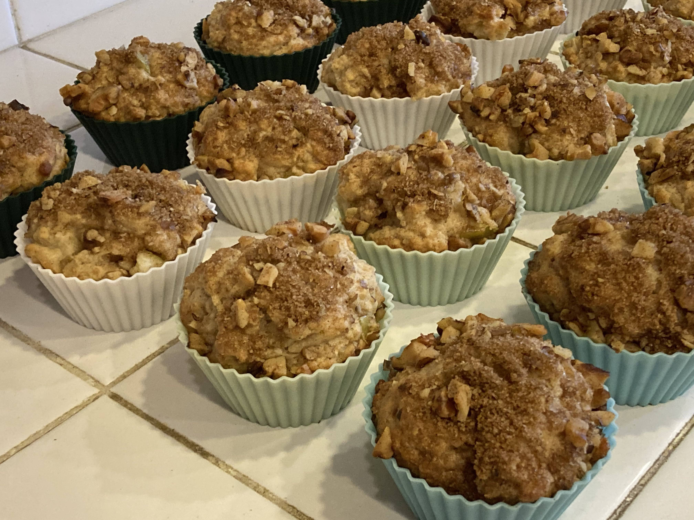

Apple streusel muffins
Source: based on https://www.bettycrocker.com/recipes/dishes/muffin-recipes
Serving size: A dozen muffins
Homemade apple streusel muffins in silicone muffin cups
Ingredients
Batter
- 1 egg
- 3/4 cup milk
- 1/2 cup vegetable oil
- 2 cups flour
- 1/3 cup brown sugar
- 3 tsp baking powder
- 1 tsp salt
- 1 tsp ground cinnamon
- 1 granny smith apple, cut into small chunks
Streusel
- 1/4 cup brown sugar
- 1/4 cup chopped walnuts
- 1 tsp ground cinnamon
Instructions
Grease muffin tins, toss in batter, sprinkle streusel on top, and bake at 400°F for about 20 minutes, until golden brown. Immediately loosen from pan.